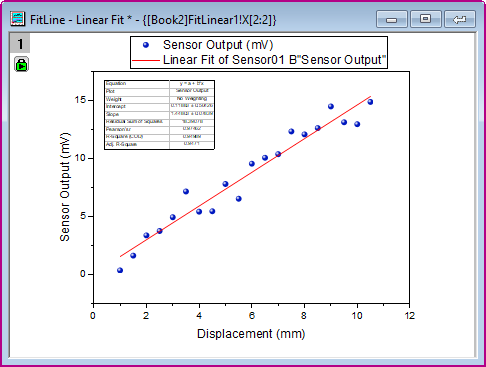

Analysevorlagen erstellen und verwenden
AnalysisTemplate-Create-Use
Zusammenfassung
Routineaufgaben können durch Erstellen einer Analysevorlage vereinfacht werden. Solche Vorlagen können mehrere Analyseergebnisse und auch benutzerdefinierte Berichtstabellenblätter enthalten. Eine neue Instanz der Vorlage kann dann jederzeit geöffnet und Quelldaten können geändert werden, um alle Analyseergebnisse und benutzerdefinierten Berichte zu aktualisieren.
Origin-Version mind. erforderlich: Origin 2015 SR0
Was Sie lernen werden
- Eine Analysevorlage (OGWU) erstellen
- Analysevorlage mit neuen Daten erneut verwenden
Schritte
Daten importieren
- Öffnen Sie eine neue Arbeitsmappe und aktivieren Sie das erste leere Arbeitsblatt. Wählen Sie Hilfe: Ordner öffnen: Sample-Ordner ... im Menü, um den Ordner "Samples" zu öffnen. Öffnen Sie in diesem Ordner den Unterordner Curve Fitting. Dort befindet sich die Datei Sensor01.dat. Ziehen Sie diese Datei per Drag&Drop in das leere Arbeitsblatt, um sie zu importieren.
- Klicken Sie doppelt auf den Reiter des Arbeitsblatts und benennen Sie dieses Blatt mit dem Namen Daten.
Analyse durchführen
- Markieren Sie Spalte B und verwenden Sie Analyse: Anpassen: Linearer Fit, um den Dialog Lineare Anpassung zu öffnen.
- Setzen Sie Neu berechnen auf Auto, übernehmen Sie die anderen Standardeinstellungen und klicken Sie auf OK, um eine lineare Anpassung durchzuführen. Ein hierarchisches Berichtsblatt wird zu der Mappe hinzugefügt, das Ergebnistabellen und eingebettete Diagramme enthält.
- Antworten Sie mit Ja auf die Warnmeldung, um zum Berichtsblatt FitLinear1 zu gehen.
- Klicken Sie unter dem Baumknoten Angepasstes Kurvendiagramm auf das Diagramm der gezeichneten Daten plus Anpassungskurve, um das Diagramm in einem bearbeitbaren Popupfenster zu öffnen.
- Klicken Sie im Menü auf Ansicht: Zeigen: Rahmen, um den Diagrammrahmen zu zeigen.
- Klicken Sie auf die Schaltfläche Neu skalieren.

- Wählen Sie Format: Achsen: X Achse aus, um den Dialog Achsen zu öffnen. Stellen Sie auf der Registerkarte Skalierung sicher, dass Typ auf Nach Inkrement im Zweig Große Hilfsstriche und der Wert auf 2 gesetzt ist. Setzen Sie den Modus von Neu skalieren auf Auto.
- Wählen Sie Vertikal im linken Bedienfeld. Setzen Sie die Neuskalierung auf Auto, die Großen Hilfsstriche auf Typ = Nach Inkrement und den Wert = 5. Klicken Sie auf OK, um die Einstellung zu speichern, und schließen Sie den Dialog.
- Verschieben Sie das Legendenobjekt und die Ergebnistabelle manuell auf der Grafik an die gewünschten Stellen. Zu diesem Zeitpunkt können Sie auch solche Dinge tun, wie das Punkt-Liniendiagramm benutzerdefiniert anpassen. Das sich ergebende Diagramm sollte in etwa dem Bild unten entsprechen.
- 
- Fügen Sie dieses Diagramm wieder ins Ergebnisblatt ein, indem Sie auf die Schaltfläche Wiederherstellen
 oben rechts in der Titelleiste klicken.
oben rechts in der Titelleiste klicken.
Analysevorlage speichern
- Aktivieren Sie die Arbeitsmappe und wählen Sie Datei: Arbeitsmappe als Analysevorlage speichern.
- Navigieren Sie zum gewünschten Speicherort, geben Sie einen Dateinamen ein, zum Beispiel MeineSensordaten, und klicken Sie auf Speichern.
- Jetzt ist die Datei MeineSensordaten.OGWU als Analysevorlage gespeichert. Diese Vorlage kann weiterhin verwendet werden, um ähnliche Analysen durchzuführen.
Analysevorlagen erneut verwenden
- Öffnen Sie ein neues Projekt und wählen Sie dann im Menü Datei: Zuletzt verwendete Mappen. Wählen Sie im Ausklappmenü die Analysevorlage MeineSensordaten.ogwu, die Sie vorher gespeichert haben.
- Wählen Sie bei aktivem Arbeitsblatt Daten im Menü Hilfe: Ordner öffnen: Sample-Ordner ..., um den Ordner "Samples" zu öffnen. Öffnen Sie in diesem Ordner den Unterordner Curve Fitting. Dort befindet sich die Datei Sensor02.dat. Ziehen Sie diese Datei per Drag&Drop in das Arbeitsblatt "Daten", um sie zu importieren.
- Da der Modus für Neu berechnen auf Auto gesetzt wurde, wird die lineare Analyse automatisch für die neuen Daten durchgeführt.
- Gehen Sie zu dem Arbeitsblatt FitLinear1 und klicken Sie doppelt unter dem Zweig Angepasstes Kurvendiagramm, um das Diagramm zu öffnen und die aktualisierten Ergebnisse anzuzeigen.
 |
Die Analysevorlage kann für die Stapelverarbeitung von ähnlichen Daten verwendet werden. Einzelheiten finden Sie in diesem Tutorial.
|